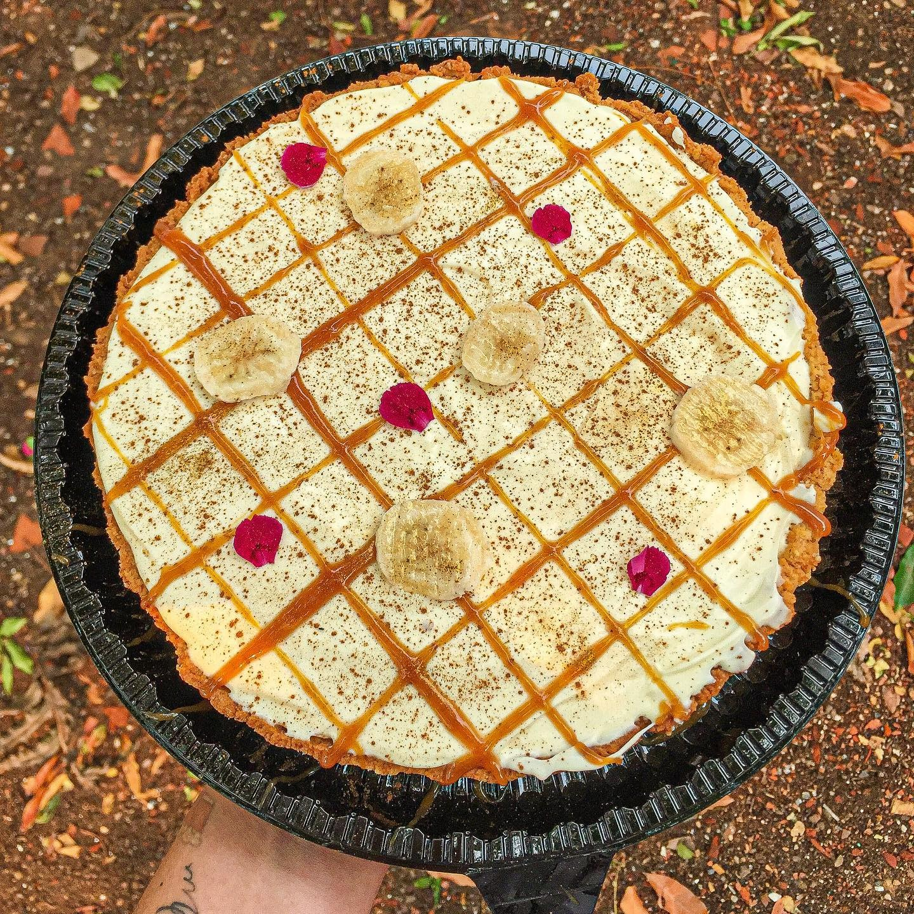

Massa
Pâte sablée amanteigada, com toque de canela e descanso antes de abrir.
receita artesanal
Uma torta cremosa e afetiva, com massa sablée de canela, doce de leite caseiro, bananas frescas, caramelo salgado e chantilly de nata.

Pâte sablée amanteigada, com toque de canela e descanso antes de abrir.
Doce de leite feito na lata e bananas frescas em rodelas delicadas.
Caramelo salgado, chantilly de nata e um tempo de geladeira antes de servir.
base da torta
camada cremosa
toque final
leveza
montagem